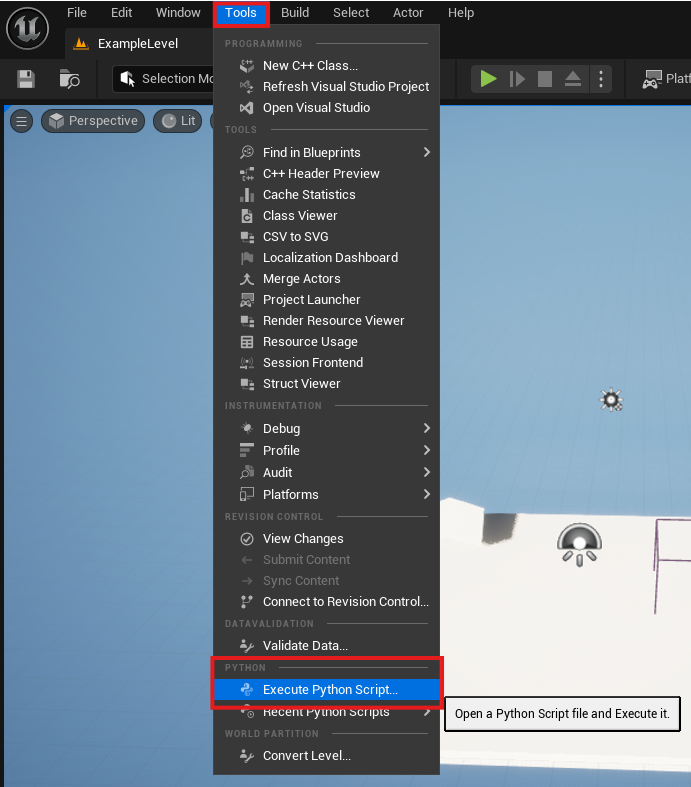
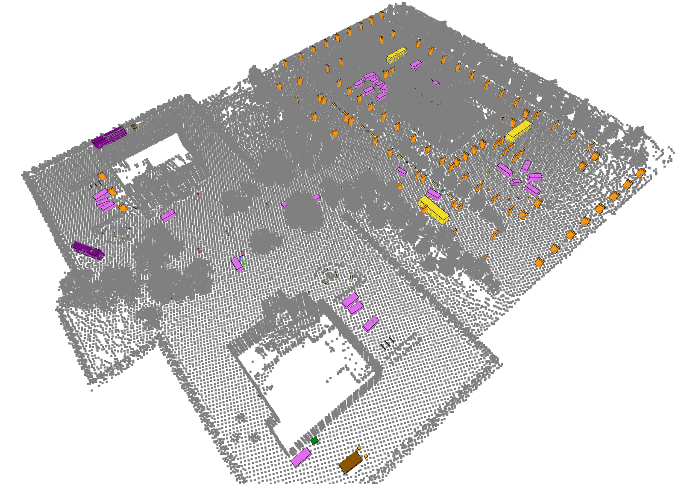

Retriving Object Bounding Boxes
This example demonstrates how to retrieve the bounding boxes of objects based on their semantic labels. This can only be done for custom levels since you need to run the python script from within the Unreal Editor.
First, you will need to set up your Unreal Editor to use python. Please see Unreal’s guide on how to set up python.
Make sure your custom level is set up with semantic labels. Please reference Adding Custom Semantic Labels.
Then, you can update map_label2id with your semantic labels.
import os
import csv
import unreal
def get_id(label):
#Fill in map_label2id with the labels and corresponding numbers for your world
map_label2id = {
"None": 0, # None = 0u
"Asphalt": 1, # Asphalt = 1u
"Bench": 2, # Bench = 2u
... # add more labels here
"Any": 255 # Any = 0xFF
}
return map_label2id.get(label, -1) # Returns -1 if label not found
if __name__ == '__main__':
# Get the Editor Actor Subsystem
actor_subsystem = unreal.get_editor_subsystem(unreal.EditorActorSubsystem)
# Get all actors in the current level
actors = actor_subsystem.get_all_level_actors()
# Adjust the path to save CSV
csv_path = os.path.expanduser("/path/to/file.csv")
# switch to False if you want oriented bounding boxes instead of axis aligned
getAxisAligned = True
# Open CSV for writing
with open(csv_path, mode="w", newline="") as csvfile:
writer = csv.writer(csvfile)
# Write header
# writer.writerow(["UniqueID", "ClassName", "ClassID", "OriginX", "OriginY", "OriginZ", "ExtentX", "ExtentY", "ExtentZ"])
writer.writerow([
"UniqueID", "ClassName", "ClassID",
"OriginX", "OriginY", "OriginZ",
"ExtentX", "ExtentY", "ExtentZ",
"RotRoll_deg", "RotPitch_deg", "RotYaw_deg"
])
unique_id_counter = 0
for actor in actors:
class_name = str(actor.get_folder_path())
class_id = get_id(class_name)
if getAxisAligned:
################################################
## Option 1: Return axis-aligned bounding box ##
################################################
origin, extent = actor.get_actor_bounds(False)
writer.writerow([
unique_id_counter,
class_name,
class_id,
origin.x, origin.y, origin.z,
extent.x, extent.y, extent.z
])
else:
############################################
## Option 2: Return oriented bounding box ##
############################################
origin, extent = actor.get_actor_bounds(False)
rotation = actor.get_actor_rotation() # returns Unreal rotator: pitch, yaw, roll
writer.writerow([
unique_id_counter,
class_name,
class_id,
origin.x / 100, -origin.y / 100, origin.z / 100,
extent.x / 100, extent.y / 100, extent.z / 100,
rotation.roll, rotation.pitch, rotation.yaw,
])
unique_id_counter += 1
print(f"Saved actor bounds to {csv_path}")
To run the python script, you can go to the Tools Execute Python script
Here is an example of what the bounding boxes look like on our Business Campus level.
